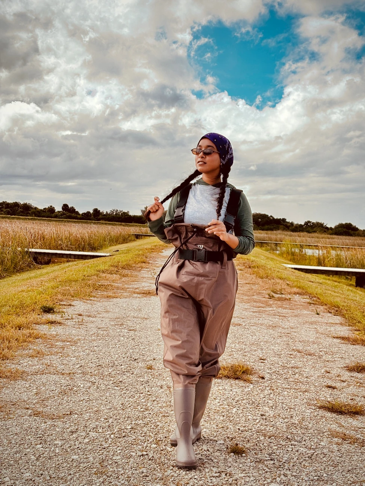

· Student award
Shazneen Chowdhury selected for the FCI Student Scholarship
Congratulations to Shazneen Chowdhury on being selected for a $2,500 FCI Student Scholarship! The selection committee recognized her interest in interdisciplinary research, scholarship, and collaboration.
